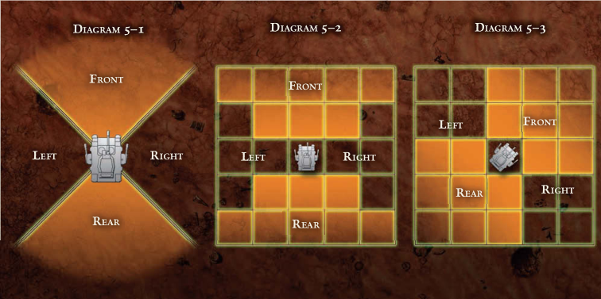
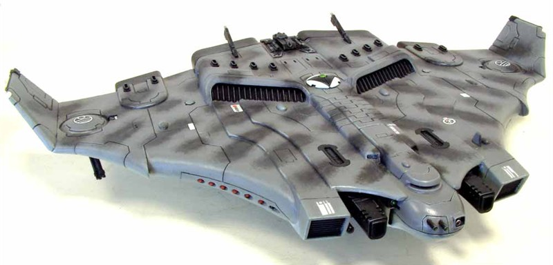
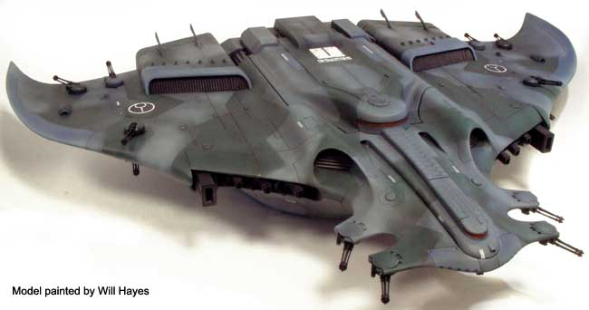

“从来没有一匹比安格里斯炼狱更好的座驾了。那辆捕食者在普锐斯九号关了50个小时，对抗着兽人集群，它的机魂丝毫没有动摇。我很荣幸能成为安格里斯的指挥官。”
--黑色执政官分团的阿切罗（Achero）士官兄弟
在第41个千年中，有各种各样的交通工具，从普通市民的地面交通工具和贵族的飞行车，再到帝国卫队强大的坦克，以及飞越行星上空的飞行器和宇宙飞船。车辆构成了死亡守望军械库中的重要组成部分:空投舱，犀牛运输车和雷鹰武装炮艇都是为了让星际战士更快速的前进，并进行突然且意外的打击。步行时，星际战士仍然处于高度危险中，但就只是局部威胁而言，敌人可以避开和逃窜，或派遣他们最强大的部队来对付。然而，有了一辆载具，一名星际战士便可意识到其真正的潜力，并且能够自由选择的时间来攻击地点，在敌人最薄弱的地方猛击。这也难怪当很多人想到星际战士时，唯一想到的就是一连串的空投舱从天上掉下来砸向地面。
这一章节提供了在死亡守望游戏中使用、购买和修理车辆的规则，从犀牛运输车、兰德速攻艇到可怕的雷鹰武装炮艇。
载具分级（VEHICLE CLASSIFICATIONS）
有五种基本的车辆类型:地面载具、步行机、掠行载具/悬浮载具、飞行器和宇宙飞船。（战舰的分级为星舰，不同于传统意义上的宇宙单位）
地面载具通常使用踏板或轮胎作为它们的移动方式。它们的速度和机动性和掠行载具一样快，但不能像步行机那样应对崎岖的地形。它们通常来说可靠，容易制造，便宜。在帝国中，掠行载具是一种正在消亡的神秘艺术，而不是科学，地面载具就显而易见的成为了最常见的交通工具。
步行者是地面车辆的一种，依靠两条或更多的机械腿来移动。这些武器包括无处不在的帝国卫队的哨兵和阿斯塔特可怕的无畏。虽然步行者的速度比大多数地面车辆要慢，但它们能够穿越任何带轮胎或履带的车辆都无法通过的地形，还能爬上陡峭的斜坡，这使得它们在边境世界和军用情况下非常有用。
掠行载具或悬浮载具使用垂直喷气发动机或反重力技术在地面上“掠行”。掠食者不是高空飞行器，而且比真正的掠食者要慢。然而，由于它们不依赖空气动力学来保持空中飞行，它们变得更加灵活，能够根据需要快速或缓慢地移动，做急转弯，甚至在原地悬停。帝国卫队的瓦尔基里战机和星际战士的兰德速攻艇都是掠行器。
飞行器是利用升力的空气动力学原理和强大的发动机保持在高空的飞行器。除了起飞或着陆之外，还必须保持至少一半的巡航速度以保持在空中，否则会撞向地面。这意味着传单不像掠行器那样用途广泛。然而，它们能比宇宙飞船之外的任何其他飞行器飞得更快、更高、更远。
宇宙飞船有许多不同的形状和大小，但这里讨论的都是小的类型:宇宙飞船和战斗机。它们被用来将货物和人从行星运送到轨道上，与更大的宇宙飞船会合，或者在太空的寒冷真空中与其他战斗机战斗。宇宙飞船是唯一能够离开行星大气层的交通工具。
战术速度和巡航速度（TACTICAL SPEED AND CRUISING SPEED）
战术速度是指车辆在需要在技巧性操作的情况下的速度，或者当车辆在一个有限空间或特定的区域(如停车场、狭窄峡谷或小型区域)行驶时的速度。这并不是车辆的全部速度，而是考虑到转弯、加速、驾驶员的干扰和地形等因素的车辆移动距离的抽象数值。
巡航速度是指车辆在长途行驶或高速行驶的情况下移动的速度，例如在巢都高速上的追逐或空中的混战。
装甲（ARMOUR）
车辆的主要防御是装甲。装甲能像个人装甲一样减少攻击造成的伤害。
车辆也可能有不同的装甲点取决于他们不同的方面。例如黎曼鲁斯战车的前部几乎无懈可击，但对较弱的尾部装甲的一枪下去可能会产生毁灭性的影响。
结构完整性（structural integrity）
这代表了载具在被摧毁前所能承受的破坏程度。就像承伤一样，结构完整性也是一个固定的数值，结构完整性的损坏会一直持续直到车辆被修复。
载具的结构完整性会受到很多因素的影响，从建造车辆所用材料的坚固度到关键系统的冗余度。
武器（Weapons）
帝国的许多车辆都装备了武器，从军务部5吨重运载车上笨重的短柄枪，再到狂怒星际战斗机上的多排前发射的激光加农炮。
所有车辆武器条目都包括该武器的统计数据，无论该武器是由车辆驾驶员控制还是由独立人员操作，以及武器的发射弧。射击弧是显示武器是否能向车辆的前部、左侧、右侧、尾部或以任何组合形式开火。
载运容量（Carrying capacity）
一辆兰德速攻艇或单车只需要一名驾驶员就可以，但一架航天飞机就需要一名驾驶员和一名副驾驶员，而一辆捕食者坦克则至少需要两名机组人员。乘员部分指示需要多少人来运行这辆载具，以及列出的他们各自的任务。乘客人数和货物容量表明多少乘客或车辆可以处理多少重量。这些数字应该被认为是“粗略”的估计，并且GM应该决定玩家是否可以在他们的双座掠行器中再多塞一个人，或者在他们的航天飞机的乘客舱内能装下多少桶钷。
机动性（Manoeuvrability）
兰德速攻艇速度极快且敏捷，能够执行复杂的动作，并对驾驶者的每一个指令做出反应。然而，维护者坦克的速度缓慢且难以操作――它更可能穿过建筑物而不是绕过建筑物。虽然车辆的操控在很大程度上取决于驾驶员的技巧，但有些车辆天生就比其他车辆更具有操控性。这是由车辆的机动性表示的，其提供了一个调整值(积极或消极)，以驾驶员的驾驶或飞行员技能，而操作所述车辆。每当驾驶或航行检定使用该载具时，应用此调整值。
驾驶和飞行
驾驶载具行驶或航行，玩家必须有相关的驾驶操纵类技能。玩家可以在没有经过GM所描述的相关训练情况下驾驶一辆简单的地面车辆(当然要对他们的技能检定进行适当的减成!)，但是驾驶步行机或驾驶飞行器则超出玩家们的能力范围。
当驾驶或航行载具时，拥有正确技能的玩家将不必进行技能检定来执行日常的驾驶或航行。玩家被认为知道如何起飞、降落，并遵守当地的交通法规。
当玩家尝试一些特别具有挑战性的事情时，或者在战斗或其他高压力的情况下操作车辆时，技能检定就出现了。例如，在高速追逐中撞到另一辆车需要一个技能检定。高速躲避机动在空中格斗可能需要数个检定。
根据具体情况，这些技能检定可能是标准检定，也可以是相对的检定。例如，上述两种情况下就需要驾驶员之间进行对抗检定。在雷雨中降落航天器或在结冰的道路上快速驾驶都需要一个标准的技能检定，该检定会根据情况进行调整。
表4-1总结了车辆可能经过的一些不同类型的地形，以及这种地形对驾驶检定的影响。这些减成与车辆或司机会遭受的任何其他处罚可以累积。
| 表4-1不同地形和其他危害 | |
| 地形类型 | 调整 |
| 清晰,平彻的道路 | +0 |
| 粗糙砾石道，干净旱地 | -5 |
| 深约20厘米的稀泥或死水，流沙，茂密的林下植物和灌木丛（大多数轮式载具根本无法通过此类地形，尽管有轮胎的军用载具和大多数履带载具都有应付此情况的装备） | -10 |
| 1米见深的流水，岩石，或者不稳定地形，茂密森林或者毁坏的城市景观（上述限制适用，此外，如果驾驶检定失败在4或4点以上时，载具就会陷进去，或者卡住，需要把车推出来才可继续行驶。） | -15 |
载具战斗
操作车辆的玩家可以在战斗回合中采取行动。这些行动不同于那些没有操作车辆的玩家，但仍然属于相同的基本类别:半动作、全动作、反应动作、自由动作和扩展动作。
一些车辆会有多个乘员。在这种情况下，驾驶员的先攻轮将决定其余乘员的先攻。此时应重新安排先攻轮的顺序，使骰出最高先攻的乘员顺序在驾驶员之后，然后是下一个先攻最高的乘员，并以此类推。随后每个乘员可以采取不同的行动。例如，驾驶者可以移动车辆，而枪炮手则可以向目标射击。每个乘员只能采取一个完整行动，然而，有些行动可能会被其他人打断。如果两个潜在操作发生冲突，驾驶员的操作具有优先级。
载具攻击
载具的枪炮手或乘员可以采取任何与表8-1:战斗行动中所列相同的攻击动作(见死亡守望规则书第237页)，但有以下限制。如果载具在先前进行了战术速度移动，任何来自载具的射击要遭受-10的减成。如果车辆在先前进行了移动了两倍的战术速度，则射击要遭受-20减成。即使车辆已经移动，枪炮手或乘员也可以采取全攻击动作。驾驶者只有在没有使用全动作移动车辆的情况下，才可以采取攻击动作。
拥有车辆驾驶技能或航行技能的人物不需要特定的武器熟练就可以发射装载在该类型车辆上的任何武器而不受惩罚。但假设其专长也包括武器使用。
载具移动
以下战斗行动可用于车辆操作者。这些动作只适用于地面载具、步行机、掠行器和作为掠行器的航天器。由于飞行速度快，飞机不能在战场上作战就像坦克或缓慢移动的掠行器一样。有些飞机也可以作为掠行器使用(如雷鹰)。
闪避（反应）
驾驶者看到了威胁并闪开了，希望把他的车远离火线。只有当载具在先前回合中移动了至少一个战术速度时，才可以采取这个动作。驾驶者进行驾驶或航行检定，其减成等于车辆的体型调整值(如果有人试图用一辆巨大的卡车来闪避，由于其尺寸将给予对手+20的撞击，那么其驾驶检定将受到-20的惩罚)。每一度成功，都可以避免一个来自一个来源的射击，就像闪避反应动作一样。
如果驾驶员以5度或5度以上的失败度结束驾驶检定，他就会失去对载具的控制，载具就会翻车。参见171页的失控。
战术机动（半或全动作）
车辆移动其战术速度(半动作)或两倍战术速度(全动作)。在任何方向旋转90度之前，车辆必须直行向前或向后移动至少等于其自身的长度(如果每回合都转弯，车辆可以转弯不止一次)。步行机和掠行器可以会忽略这一限制。
规避机动（全动作）
载具穿梭躲避变成一个棘手目标。载具必须移动出其战术速度(遵循上方战术机动的限制，但是假设车辆移动更不规律以保持在同一位置)。在此过程中驾驶者将进行一个挑战(+0)驾驶检定。如果成功，并且每一个额外的成功度，车辆就会对所有攻击施加-10的减成，直到它的下个回合开始。车辆在回合内进行的任何射击都会受到同样的减成。
如果驾驶员以5度或5度以上的失败度结束驾驶检定，他就会失去对载具的控制，载具就会翻车。参见171页的失控。
加速！（全动作）
车辆的移动速度变为其战术速度的两倍，并且只能转弯一次。此时驾驶者将会进行一个困难 (�C10)驾驶检定。如果成功了，在最后可以再移动5米，每有一点成功度，再增加5米。如果失败了，载具不会获得任何额外的移动。在任何一种情况下，所有射击或从车辆上的射击将会遭受-20的减成。步行机不能使用此战斗动作。
如果驾驶员以5度或5度以上的失败度结束驾驶检定，他就会失去对载具的控制，载具就会翻车。参见171页的失控。
撞击（全动作）
载具尝试撞击人或其他载具。载具必须以至少其战术速度在直线上移动，驾驶员必须进行挑战(+0)驾驶或航行检定。如果成功了载具就会命中目标，对其正面造成相当于装甲点的伤害+ 1d10。如果车辆以两倍的战术速度移动，则会造成额外的2d10伤害。如果载具撞到另一辆载具(或同样大而坚固的东西，如塑胶墙或钷贮罐)，也会受到相当于车辆装甲点+ 1d5的伤害。撞击载具每造成一点伤害，也会将目标推动1米。
空中战斗（AERIAL COMBAT）
空战在战争中是独一无二的。快速飞行的飞机在几分钟内跨越很远的距离，笨重的轰炸机从高空攻击地面目标，在2000米的高空，光滑的战斗机在超音速的速度下决斗。
死亡守望中的空战与常规空战有着相似的表现方式。空中作战时，位置和机动才是关键。攻击者试图抓住并停留在目标的尾巴上，而目标则要拼命地尝试挣脱并逃跑，或者可能转一圈，并最终反过来落在攻击者的尾巴上。空战是一场真正的决斗，与其说是由机器的性能决定，不如说是由飞行员的原始技能决定。
虽然这些规则指的是两架飞机之间的战斗，但也可以很容易地用来指代两架航天器之间的混战，比如雷鹰或风暴鸦。
空战和常规战斗一样，都是在架构时间中进行的，每回合大约要5秒。常规战斗的其他规则也应该遵守。飞行乘员(即使有多个机组人员)的先攻将由驾驶者为第一位，并且载具中的每个人都必须在同一时间段内轮流(如载具规则中所述)。
在战斗情况下，飞行的移动距离用空里(AU)表示，相当于100米。这样做的原因很简单，载具的移动速度足够快，如果用米来衡量战斗距离，数量会非常大，因为速度会非常快。
由于在大气中的飞行原理，飞行员在操纵方面会受到一定的限制。飞行单位必须始终在回合�纫贫�出一个战术速度(除非执行一个特定的操作来进行调整)。此外，飞行单位的转弯将受到移动距离的限制。飞行器每移动5点AU，才可转弯45度。对于飞行单位来说可以转弯的次数没有限制。
这是一个飞行员的基本动作。具有航行技能的飞行员不需要检定就可以执行这个动作，除非有可以减成的情况，比如暴风雨。
基本的移动可以通过驾驶者可用的各种动作来修改。通过增加驾驶技能检定的难度，驾驶者可以执行更复杂的操作。通常来说，每个回合只能进行一个动作。但是，驾驶者可以选择在一个移动动作中执行多个动作(除非有特别说明)。当驾驶者们同时进行操纵时，应该确定在他想执行的所有操纵动作中，对所要求的航行检定的最高减成。然后应该使航行检定的难度每1程度上增加1点成功度要求。然后进行航行检定，如果检定成功，就能从所做的所有操纵中获益。
注意:所有机动都列出了航行检定，但没有指定所需的航行检定类型。这是因为机动既可以由驾驶者进行，也可以由航天器和战斗机等航天器进行。驾驶载具的类型决定了所需检定的类型。
高速追逐（HIGH - SPEED CHASES）
虽然此战斗规则可以用来表现高速追逐和追击，但却并不能准确地描述驾车穿越险峻的山口截断撤退的敌人巡逻队的紧张和兴奋，或者试图在敌人的空投舱向下面毫无防御的城市释放纳垢的液体之前击落它。
其实高速追逐可以用一系列对抗驾驶或航行检定来表示。当追逐开始时，GM将决定追逐者和被追逐者之间的距离。然后两名玩家轮流进行驾驶或航行检定(这取决于所涉及的载具)。如果追逐者获胜，每成功一点，追逐者与被追逐者之间的距离就会减少10米。如果被追逐者获胜，他会增加同样数量的距离(每点成功增加10米)。这种情况每轮持续一次，直到载具之间的距离下降到零或增加到300米。在这一点上，双方进行了另一个对抗驾驶或航行检定。如果追踪者胜利，他会迫使他的猎物停下。如果被追逐者赢了，他就会增加上面定义的距离。
更快的车辆将为这个检定增加额外的加成。比较一下载具的最大速度，速度较快的载具每行驶10公里就比速度较慢的载具快10公里，该载具的驾驶者在驾驶或航行检定中就会获得+10。
当然，高速追逐也绝不是安全的。除了交火之外(应该按照常规和载具战斗规则进行)，还经常有失控危险，甚至会撞上其他载具。所以在高速追逐过程中进行驾驶检定或航行检定时，任何99-100的骰点都意味着车辆失去控制或撞到障碍物上，并按损坏计算(见载具暴击表，第170页)。“危险区域”可以根据追逐的情况而累计。在拥挤的道路上的追逐可能意味着97-100时发生车祸，而与车流进行的追逐可能会将其修改为92-100。一如既往的是GM应该是最终的裁决人。
加速/失速
驾驶者可以通过一个挑战(+0)航行检定来调整飞行器移动的快慢。每有一点成功度他就可以减少或增加其飞行器在这个回合中移动的次数。其移动速度不能超过对手战术速度的两倍或自身的一半。
英麦曼回转（Immelmann turn）
如果驾驶者想要快速改变方向，他可以做一个极端的环转，在一个非常窄的环中完全扭转方向。驾驶者必须进行一个艰难 (�C20)航行检定。如果成功，飞行器就向前移动，在一个非常小的转弯，最后回到本位，并面对相反的方向。这是飞机转弯时的动作。不能与任何其他机动结合。帝国海军战斗机飞行员曼弗雷德・冯・英麦曼(Manfred von Immelmann)完善了这种机动，这种机动就是以他的名字命名的。
急转弯（Tight Turn）
如果驾驶者想要更快的转弯，他可以做一个挑战(+0)航行检定。在一个成功的回合中，每有一点成功度，在这个回合中转到90度之前，他至少要移动一点AU点(至少是两个)。飞船必须保持它的战术速度。
侧滑（Sideslip）
大多数飞机都配备有矢量推力引擎，可以进行小的“侧滑”机动。要做到这一点，飞行员必须做一个困难(-10)航行检定。在成功的情况下，每有一点成功度，他就可以在不改变飞行方向的情况下将其战术速度中的一点AU直接向左或向右移动，最多可以达到他的战术速度的一半。驾驶者可以在剩余动作之前或之后侧滑，但飞行器必须正常移动完剩余的战术速度。
扫把星（Jinx）
如果飞驾驶者想要避免来袭的炮火，他可以使用扫把星，使其行动不稳定且不可预测，以避免来袭的炮火。他将要进行一个挑战(+0)航行检定。在成功的情况下，每有一点额外的成功度，就可以对所有来袭的射击施以-10减成，从本回合开始直到下一个回合开始。
如果驾驶者未能通过驾驶检定并且失败2点或更少，那么他就必须按照正常操作进行基本操作。如果失败2点或更多，则驾驶者将进入一个陡峭的俯冲，驾驶者必须进行一个挑战(+0)航行检定来恢复。否则飞行器会以战术速度向下移动直到撞击地面。
在某些情况下，飞机可能在恶劣的环境下飞行，比如暴风雨天气。在这种情况下，GM应该一步增加所有航行检定的难度(或者迫使飞行员进行挑战(+0)航行检定，如果他们通常不需要检定的话)，则对所有射击施加-10的加成。如果情况特别糟糕，则应加大减成力度。
六点方向（Six Position）
驾驶者努力让他的对手锁定在武器规镜里，即使这会使自己更容易成为目标。驾驶者将对另一名驾驶者进行一个对抗的挑战(+0)航行检定。如果成功并且能够结束他的移动并使他的飞行器能够瞄准对手，所有从他的飞行器向对方的射击都将获得+20加成。但任何射击此飞行器的人都将获得+10加值，直到这名驾驶员下一个回合开始。
举例
马库斯兄弟驾驶着一架雷鹰战机在大气中对抗一架钛族的梭鱼战斗机，他需要一个急转弯才能咬住梭鱼的尾巴。他决定把加速（Speed Up）和侧滑（Sideslip）结合起来。因为侧滑动作的难度要大一些，加速动作为挑战，所以检定的基础难度为困难(-10)。然而，他每多做一个动作(在这种情况下是一个)需要额外的-10(一个难度)减成。所以最后的调整是艰难(-20)。马库斯的航行技能是60，但是由于-20的减成，他的检定值是40。他骰出29，又成功了一个成功度。马库斯现在在移动过程中可以额外多移动两点AU，由于侧滑的原因，他选择在移动结束时将这两点AU移向一边，使他直接处于钛族梭鱼战斗机的后方。
空战中攻击（ATTACKING IN AERIAL COMBAT）
在飞行者移动前后，可以发射任一或所有武器。但空战射击需要遵守以下限制:
•每个驾驶员或枪炮手只能在飞行器上发射一个武器系统。然而驾驶者可以在进行机动动作后进行射击攻击。
•从飞行器上射击需要-20的射击技能检定。驾驶者唯一能采取的攻击行动是单发、半自动射击和全自动射击(见死亡守望核心规则书236-243页)。这些动作为射击提供了标准的加成，并可以减少先天的减成(速射自动枪长期以来一直是狗斗中最好的武器)。
•武器的发射弧决定它是否可用。这与载具射击的方法相同(见下文)。
发射载具武器（SHOOTING VEHICLE WEAPONS）
当射击安装在载具上的武器时，重要的是要考虑武器面朝何处。这就要决定方向(相对于车辆)，武器可以瞄准和发射。举个例子，犀牛APC上装有一台暴风爆弹枪可以面对所有人，因为可以向任何方向旋转。然而哨兵自动炮是面朝正面的，所以只能用来向车辆前方的目标开火。方向通常分为四个象限:前，左，右，后(或四种的某些组合)。作为一个普遍规则，每个面延伸出载具此方向的90度。如果目标在武器的面向弧内，则武器就可以对其射击。
载具伤害（DAMAGING VEHICLES）
攻击车辆与攻击人或生物非常相似。当向车辆开火时，玩家应该确定他们可以看到车辆的哪一面，以及他们可以击中哪一面。直接面对玩家的面就是可以被射击的一面(根据GM的判断)。一旦决定了要攻击的面，玩家就可以开始进攻，使用格斗技能或射击技能来配合他们的武器。记住因为车辆有体型调整，这将很可能提供额外的命中。
车辆有两个主要的防御特性，装甲点(也称为AP点或装甲)和结构完整度(也称为SI或完整度)。
装甲不仅代表了制造车辆所用材料的固有硬度，也代表了车内抵御攻击的物理保护。例如，狂怒战机的精钢外壳具有极好的护甲，而兽人Trukk那摇摇欲坠的外壳则具有极差的装甲。装甲的作用方式与人或生物的装甲相同。当对车辆射击时，骰伤害然后减去装甲点(AP)。一定要把武器的穿透值也考虑进去。
剩余的损坏将是对车辆的完整度造成的。完整度是指车辆结构的坚固程度、内部的冗余和后备系统的数量，以及车辆在炸成火球前能被击中的次数。在游戏中，结构完整度的作用就像承伤对人或生物的作用一样。当车辆遭受的损害等于其完整度时，任何额外的伤害都将用于车辆暴击表(表4-2)。就像针对个人的致命伤表一样，车辆暴击表上的任何结果都是累积的。例如，如果一辆车在其结构完整度已经受到的损坏之后又遭受两次损伤，那么就将会在重击图上遭受“2”的结果。如果在随后的回合中，车辆再遭受4点伤害，它将在重击图上遭受“6”的伤害。
对车辆的攻击也受于正义之怒的规则。对车辆产生的正义之怒与对个人产生的正义之怒是相同的，如果一个人物对车辆造成的伤害掷出10点，然后通过随后的射击技能检定确认攻击，他就会产生正义之怒，（但需要注意的是，这次攻击会伤害载具)。然而，正义之怒对交通工具和对生物或个人的影响是不同的。如果一个角色产生了正义之怒并确认了它对车辆的伤害，载具暴击表上骰1d5，并将结果应用到载具上，而不是掷出额外的伤害。请注意，虽然载具受到了骰点结果的影响，但这并不算遭受了一次暴击。未来的伤害仍然会作用到载具剩余的结构完整度，而正义之怒产生的车辆暴击表上的骰点并不会累积暴击。

| 表4-2载具暴击单 | |
| D10 | 结果 |
| 1-2 | 刺耳的打击（Jarring Blow）:命中将载具抛来抛去，将载具内的任何东西都抛动在机厢中。任何没有系安全带或其他安全措施的机组人员必须进行普通(+ 10)坚韧检定或晕眩1d5轮。所有下一轮自载具射击将遭受- 20的减成，因为震荡目标偏移，射门偏转。 |
| 3 | 弹震（Staggered）：直接击中驾驶舱周围的装甲会让驾驶者昏迷。他必须通过一个挑战（+0）坚韧检定，否则将会晕眩，无法驾驶或航行1d5轮，地面车辆会在尖叫声中停住，掠行器将以加速度朝最后移动的方向漂移，而飞行器将缓慢地倾翻并开始向下俯冲，除非飞行员恢复知觉并对飞机进行调整。 |
| 4 | 武器摧毁（Weapon Destroyed）:随机选择的一件武器被爆炸击中，并在爆炸中扭曲直至融化到进行专门维修否则不可用。武器不再发挥作用，并且有25%的几率武器的弹药架殉爆。如果发生，对载具和使用武器上的炮手的骰点伤害就如同被摧毁的武器击中了他们一样，但所有的骰点伤害减半。 |
| 5 | 发动机损坏（Drive Damaged）:命中造成的轮子履带撕裂，空气入口击穿，或者碎片进入重力发生器外壳，造成严重的伤害。降低车辆的战术速度2d10(和巡航速度的一半)。如果这使战术速度为0，车辆则不能移动。地面上的车辆颤抖着停止前进，而掠行器和飞行器则会坠落到地面上，如果飞行高度足够高，这可能会成为一个问题。 |
| 6 | 穿透（Penetrating Hit）:命中撕裂了载具的装甲，只留下无用的金属碎片。减少车辆的AP在此面一半。如果攻击是远程武器，流弹撕裂的车辆内部，以及。乘客和乘员有20%的机会被流弹击中，并承受一半的骰点伤害。此外，飞行器在是对外开放的，如果飞行器处于有毒的空气、水下或真空中，这可能会成为一个问题。 |
| 7 | 起火（fire）:因为其燃料储备点燃或电源储备超载导致车辆起火。任何在里面的人必须做一个困难(-10)敏捷检定，否则载具里面的每一轮都会着火。此外，每一轮都有20%的几率载具会爆炸。 |
| 8-9 | 摧毁（Destroyed）:撞击摧毁了车辆，把它变成了一堆碎裂的废铁。任何在车内的人都会受到2d10的爆炸伤害，并且必须进行一个困难（-10）坚韧检定，否则会被晕眩1d10轮。掠行器或飞行器会坠落到地面或进行俯冲，这取决于他们当时的高度。希望有足够的重力滑道..... |
| 10+ | 爆炸（Explodes）:直接击中弹药库、燃料箱或其他关键部位，将其变成一团狂暴的火球。任何在里面的人都会受到5d10的爆炸伤害。任何距离车辆2d10米的人都会受到2d10爆炸的伤害。如果车辆的顶部、侧边或舱门是敞开的，乘客或机组人员可以会在最后一秒做出闪避反应动作以逃生。在闪避检定中成功的人只会受到爆炸造成的2d10伤害。 注:根据载具的内容，GM可以认为合适的爆炸半径和/或伤害。 |
维修载具（REPAIRING VEHICLES）
修理损坏的车辆通常是用技术使用技能来完成的。如果一辆载具遭遇了致命的瘫痪或穿透性攻击，玩家可以花费1d5小时进行一次技术使用检定(+0)来恢复它的运行状态(只要有合适的工具和装备)。每一点额外的成功度将减少一个小时的修复时间，不能低于一个小时。损坏的武器有时也可以修复。在试图修复损坏的武器之前，掷1d10，结果为5或者更低时，武器严重损坏，不能修复必须更换。
如果一个或多个个人在设备齐全的修理车间中进行上述操作，并且花费额外的1d5天进行维修，那么修理车辆时可恢复一半的完整度。如果每个人都能花2天的时间来修理车辆，车辆的完整性就可以全部修复。
非战斗类损伤，如燃油管路泄漏，车轴断裂，或挡板掉落，都可以使用相同的方式修复。但根据损坏的类型，GM可以减少或增加修理的难度和时间。毕竟，更换轮胎所花的时间不会像重建掠行器的推进器的时间那么长。
失控（CRASHES）
任何飞行员或驾驶员都非常清楚将车辆推至极限所带来的风险，而最壮观(和致命)的风险之一就是撞向附近的建筑、旁观者或其他车辆。撞车事故的范围可以是轻微的事故，乘员的摇晃和外观损坏，也可以是车辆在爆炸前的一个巨大燃烧的钷元素球。
当一辆汽车(或在离地10米或更低的地方掠行的车辆)相撞时，可能会有几个后果。这些结果主要取决于汽车行驶的速度以及撞到什么东西。
•如果车辆在回合�纫贫�(或试图移动)的距离等于或小于其战术速度，则车辆将向当前面对的方向移动其试图移动其距离的一半(GM可以根据车辆的动量或动作选择不同的方向)，车辆将完全停止。如果车辆撞到带有AP的物体，例如墙壁、树或其他车辆（甚至是穿有动力甲的人），车辆的动作就视为在以战术速度移动时撞击了它们（这可能会导致额外的撞击暴击伤害）。根据GM的判断，该物体可能阻止车辆继续向前移动。
•如果车辆回合�纫贫�(或试图移动)的距离超过其战术速度，GM将确定车辆行驶的方向，并测量该方向上等于其战术速度的距离，然后向随机方向分散1d10米(死亡守望规则手册第248页)。这是车辆碰撞后的终点。载具完全停了下来。在载具暴击表上骰1d10决定载具遭受的暴击。如果载具撞击AP目标，例如墙、树或其他车辆(甚至是穿动装甲的人)，载具会以两倍的战术速度撞击目标(这可能会造成额外的撞击暴击)。根据GM的判断，该物体可能阻止车辆向前移动。
•如果载具在以战术速度或更快的速度行驶时发生碰撞，则车辆有就可能侧翻。在本例中骰点为1d10。结果在6或更高的结果，载具翻了个跟头(或者如果移动足够快，侧翻跟头)。当掷暴击时，在掷骰结果上加+4。如果载具幸存下来，其结构完整度丧失一半，必须进行修复才能再次使用。在GM的自由裁量下，可能是完全破坏和不可使用需要替换。
•如果飞行器(或在空中超过10米掠行器坠毁，后果将会严重得多。飞行员将有时间做一个非常困难(-30)航行检定。如果成功，飞机就会迫降，在地面上犁出一条大沟出来。飞船被摧毁了，里面的人无视装甲受到2d10I的伤害，并且会眩晕数轮等同于所遭受的伤害。如果飞行员没有通过检定，飞机就会翻到地上爆炸，这是根据载具暴击表上10+的结果。根据规则，每个人都可以在最后一秒跳伞，不过无论飞机在回合时的高度如何，他们都将被视为从飞机上坠落。
杀戮小队征用载具
如果任务需要，本章列出的许多星际战士用载具都可以被分配到一个杀戮小队中。每辆载具均有声望规定;例如古老兰德掠袭者只能被分配给那些已经证明自己配得上这个荣誉的战斗兄弟!
在任何任务的准备阶段(见死亡守望核心规则书第227页)，杀戮小队的队长可以为他杀戮小队请求一辆载具。如果指挥官的声望足够高，并且GM也认为这辆车适合执行任务，那么杀戮小组就可以使用该车辆。
在正常情况下，杀戮小队将充当车辆的乘员。但是，可以根据GM的判断，载具可能包括额外的操作人员;举例来说，如果杀戮小队需要撤离，一架雷鹰武装炮艇会有自己的机组人员。
空投仓（DROP POD）
虽然帝国卫队被正义地称为皇帝的铁锤，但星际战士却是皇帝的闪电箭。他们的攻击依赖于速度，在选定的地点提供压倒性的力量，因为尽管他们的个人实力很强，但很少有一支星际战士突击队在数量上超过敌人。一旦它们进入轨道，目标就是将星际战士运入到战斗中，其速度之快，破坏力之大，将使敌人无法建立防御，而通过空投舱进行攻击是最有效的方法。听到空投仓的接近就是听到末日降临，而看到他们着陆就是目睹死亡。
空投舱经常被星际战士使用，是单向型行星攻击载具。从绕轨道运行的星际飞船中发射而出，在尖啸中穿过星球的大气层，在巨大的火箭推进器下将它们推得远远的超过终端速度（一种速度单位）。空投仓使用机载沉思者在碰撞过程中引导自己到达目标。即使是最先进的防空系统也很难锁定以每小时12,000公里的速度直线下降的空投舱。在最后一刻，底座周围强大的反向火箭发射，使吊舱“减速”并粉碎性落地，但不会伤及内部人员。
空投舱作为进攻武器和递送系统，在降落点周围地区会发出毁灭性的爆炸，就像一个小流星击中。敌人还没来得及恢复，舱门就会砰地落下，死亡天使就会从中走出。很少有人能抵挡随后猛烈的攻击。
正常人类会在进入大气层时遭遇强烈的减速力而死亡，除非事先进行了大量的改装，使空投舱成为一种独特的太空运输工具。每艘空投仓通常可以搭载一整班的星际战士，甚至还可以搭载一艘威力巨大的无畏，而且大多数都配备有风暴爆弹枪或其他由机魂操作的武器，在乘员出来前释放压制火力。当它们必须尽快直接进入战区时，吊舱还可用于部署必要的自动哨兵武器或货物。
类型: Spacecraft 战术速度: 200 AUs
巡航速度: 12,000 kph 机动性: +0
结构完整性: 30 体型: 超大
装甲: 全24 乘员: 无
声望: 新兵
武器
风暴爆弹枪 (全方向, 射程100m, S/2/4, 2d10+5 X,Pen 5,弹匣100, 装填2全, 风暴, 撕裂)
载运容量: 10名星际战士或者同等货物
特殊规则
空投舱突袭（Drop Pod Assault）:空投舱在载具中有些独特，因为一旦空降仓“着陆”，就不会靠自身力量而移动。所以空投舱必须从带有空投舱发射舱的星舰上发射，并直接向下飞行向目标行星，直到撞到地面后。虽然不能进行机动，但只要距离星球表面以上至少500公里的地方时，空降仓的目的地可以在飞行中改变到距离原始目的地25公里以内的任何地点。所有射击空投舱的检定遭受-30减成，空投舱是在飞行。
降落时后，空投舱选择一个设定的目的地，然后向随机方向散布2d10米。这是空降舱的最终位置，它不能移动，直到被回收并送回母船。
兰德劫掠者（Land Raider）
兰德劫掠者的STC设计在帝国中早了几千年。其最初的设计在纷争纪元丢失了，在传奇的大科技考古学家阿克汉 兰德重新发现之前，兰德劫掠者一直不为人所知的多年。
可以说是在目前服役于阿斯塔特修士中最先进也是最强大的战斗坦克，兰德劫掠者包含许多专门和复杂的系统。坦克是密封结构，这允许它在几乎任何环境下工作，从纯真空到水下。
每一个兰德劫掠者都有一个高性能的机魂和指挥控制设备。每个小队的状态屏幕允许指挥官通过坦克的通讯盘推送来观察他的小队的生物状态读数。兰德劫掠者还包含全息战术显示器和与坦克机魂的直接接口。这为车辆指挥官提供了获取大量战场信息的途径，这意味着除了作为前线战斗车辆和运输工具外，兰德劫掠者还非常适合作为指挥和控制中心。
兰德劫掠者的附加功能包括大气取样装置、辐射计数器、空气过滤和净化、炮塔环周围的多光谱光学潜望镜、用于安全目的的基因编码控制装置和控制侧装武器的机奴远程瞄准系统。
在强化陶钢和精钢的保护下，兰德劫掠者几乎不受大多数破坏性武器的影响。这些车辆被认为是科技战士的幸运之物，他们监督着它的维修和维护，部分原因是坦克中机魂的力量。许多机械教团的信徒相信，大部份的奥姆尼西亚的精髓都存在于兰德劫掠者那无法穿透的坚固外壳中。事实上，有很多关于兰德劫掠者在机组人员死亡或丧失能力后仍在机魂的指挥下继续作战的传说和故事。
类型: 陆行载具 战术速度: 15 m
巡航速度: 70 kph 机动性: +0
结构完整性: 95 体型: 超大
装甲:前部50, 侧部50, 尾部 50
乘员:驾驶员,车长
载运容量: 12名星际战士或者同等货物.
声望:卓越
武器
炮塔搭载式双联重爆弹(前/侧,射程150m,重型, �C/�C/10, 2d10+10 X,穿甲6,弹匣400,撕裂,双联)
双外伸搭载式双联激光加农炮 (前,侧,尾部, 射程300m, 重型, S/�C/�C, 6d10+10 E, 穿甲10,弹匣30,双联)
特殊规则
机魂之力（Power of the Machine Spirit）:兰德劫掠者装备了一个复杂的沉思者核心（core-cogitator），这使得兰德劫掠者被赋予了异乎寻常狡猾的机魂。当发射兰德劫掠者的武器时，兰德劫掠者的车长可以发射一个额外的武器系统。该武器的射击视为驾驶员控制，但使用机魂的BS50。攻击不受驾驶员拥有的任何天赋或其他属性调整(实际上是由机魂发射的)。
命令与控制（Command and Control）:兰德劫掠者的特殊特性可以允许其使用命令类技能影响许多小队、单位(如雷鹰或捕食者坦克)或杀戮小队(任何组合形式)，这些技能影响的友军数量等于交际加值。这种效果可以结合基于交际技能的天赋，如铁律，演说大师，等等。任何使用此装备的角色在命令技能检定上也获得+10加值。
强化车体（Reinforced Hull）:当一辆带有强化车体的车辆受到暴击时，其结果减半，四舍五入并向上取整。但这不会影响正义之怒产生的暴击图表。
兰德劫掠者变体
兰德劫掠者的底盘是相当多用途的，并已经在整个银河系星际战士分团中产生了一些改进的型号。死亡守望也不例外，由于死亡守望的独特组织结构，杀戮小队可以使用下面描述的任何一种变种设计。
兰德劫掠者远征军型（Land Raider Crusader）
这个兰德劫掠者的衍生型是由黑圣堂战团在杰鲁拉斯[1]远征期间开发的。远征军型兰德劫掠者是一种无与伦比的阵线突破坦克，能够粉碎敌人的防御工事，并向敌人的军阵中心运送一整支星际战士突击部队。这种坦克经常使用起来远比其他变种更具侵略性，因为他们的特点是大量的近程和快速射击武器。（注1：杰鲁拉斯远征是黑圣堂大元帅卢多尔德斯在645.M39（另一说304.M39年）对太平星域中针对杰鲁拉斯世界群发动的一场攻坚远征，关于杰鲁拉斯的防御传说是由罗格多恩督建的 ）
载运容量: 兰德劫掠者远征军型可以携带16名星际战士或者同等货物.
兰德劫掠者远征军型可以将双联重爆弹升级为双联突击炮:
炮塔搭载式双联突击炮(正面朝向/侧, 150m, �C/�C/10, 3d10+6 I,穿甲6,弹匣 300, 装填3全, 撕裂, 双联)
兰德劫掠者远征军型可以将双联激光加农炮升级为飓风爆弹枪:
外翼搭载式飓风爆弹枪(正面朝向/侧,50m, �C/6/12, 2d10+5 X,穿甲4,弹匣 300, 装填3全, 撕裂, 双联)
破片雷突击发射器 (正面朝向, 50m, �C/3/�C, 见死亡守望第150的破片手榴弹)
兰德劫掠者赫利俄斯型（Land Raider Helios）
兰德劫掠者赫利俄斯型是由红蝎战团创造的，作为一个权宜之计，加装了额外的炮兵支援设备掩护星际战士。兰德劫掠者赫利俄斯型主要区别是用旋风导弹发射装置取代了顶部装备的武器。扩大了火炮作业所需的额外弹药装载空间并减少了车辆的运输空间。赫利俄斯在战场上的杀伤和用途都有所限制，但仍旧是一种不常见的变种。耶利哥边缘的死亡守望有时会给兰德劫掠者赫利俄斯型装备一种被称为旋风又成亥伯龙的常见防空导弹发射器。这个修改已经在卡尼斯突出部被证明非常有用的，尤其是当面对钛族的空中机动部队时。
载运容量: 兰德劫掠者赫利俄斯型可以装载6名星际战士或同等货物.
兰德劫掠者赫利俄斯型可以将双联爆弹枪炮塔升级为旋风导弹发射器(见185页).
兰德劫掠者普罗米修斯型（Land Raider Prometheus）
普罗米修斯型兰德劫掠者的起源是一个尚未解开的谜，尽管一些火星科技文员相信普罗米修斯型是神秘的“塔塔罗斯”型兰德劫掠者的变体(一个从未被证实的理论)。另一些人则声称它是由火蜥蜴星际战士战团在夜曲星上开发出来的。兰德劫掠者普罗米修斯型在每个侧装面上安装了两个双联重型爆弹枪，同时还包括大量的通信和传感器设备。所有的兰德劫掠者都有战术全息图和小队状态显示，但是普罗米修斯用远程信号促进器增强了这些系统，以改善所有类型级别的通信。同时还利用安全的多波段通信与友方部队协调，以及传输监控设备拦截和解密敌人的信号。此外，普罗米修斯型还具有多光谱地面监视鸟卜系统，用于定位和跟踪敌军。这些信息可以被传送到其他帝国军。
兰德劫掠者普罗米修斯型可以将外伸双联激光加农炮升级为外伸双联重爆弹:
外伸双联重爆弹 (前/侧,射程150m, 重型, �C/�C/10, 2d10+10 X,穿甲6,弹匣 400, 撕裂, 双联)
普罗米修斯型兰德劫掠者可以将顶部搭载的重爆弹更换为改进型指挥控制装备。
改进型指挥控制装备:普罗米修斯型兰德劫掠者的特殊特性可以允许使用驾驶者的命令类技能影响一些分队，单位(如雷鹰或捕食者坦克)或杀戮小队(以任何组合形式)等于该技能的交际检定。这种效果也结合基于交际的天赋，如铁律，演说大师等等。任何使用此装备的角色在命令技能检定中也获得+20的加成，并且可以重新掷出失败的命令技能检定。这些系统通常用于协调大部队的行动，大到一个星际战士战斗连队的规模。
兰德劫掠者救赎型（Land Raider Redeemer）
兰德劫掠者救赎型是对远征军型地兰德劫掠者进化型的设计，用于在碎石散落的城市街道或异形墓葬的通道上进行残酷的近距离搏斗。救赎者的设计最初是由星际战士的火焰领主战团引入的，现在已经扩展到许多其他战团，也包括了死亡守望。救赎者型用火焰风暴加农炮取代了侧装武器，向敌人阵地发射大量的甲硫燃料火焰，以摧毁步兵和轻型车辆。
载运容量: 兰德劫掠者救赎型可以携带16名星际战士或者同等货物.
兰德劫掠者救赎型可以将双联重爆弹升级为 一个特型双联突击炮:
炮塔搭载式双联突击炮(正面朝向/侧, 150m, �C/�C/10, 3d10+6 I,穿甲6,弹匣 300, 装填3全, 撕裂, 双联)
兰德劫掠者救赎者型可以将外伸双联激光加农炮升级为火焰风暴加农炮:
外伸火焰风暴加农炮(正面朝向/侧,40m, S/�C/�C, 3d10+6 E,穿甲9,弹匣 200, 装填3全, 火焰)
兰德劫掠者终极极限型（Land Raider Terminus Ultra）
兰德劫掠者终极极限型的设计最大化了它摧毁敌人载具的能力，甚至威胁到战场上最强大的部队。终极极限型模式牺牲了所有的运输能力来装载三台双联激光炮，并由另外两架侧装激光炮补充，这赋予它一个强大的高能武器阵列。然而，这些可敬的战争机器只会在最可怕的情况下部署，因为当终极极限的火力可以对系统造成不可挽回的伤害时，会产生巨大的能量累积。
载运容量: 无
兰德劫掠者终极极限可以将其全部武器进行如下更换:
三台双联激光加农炮 (正面朝向, 前/右,和 前/左, 射程300m, 重型, S/�C/�C, 6d10+10 E,穿甲10,弹匣 30, 双联)
两台激光加农炮 (右面朝向, 左, 射程300m, 重型,S/�C/�C, 6d10+10 E,穿甲10,弹匣 30)
能量过载:如果在使用终极极限型的武器时，有4个或4个以上的结果是90-100，车辆会自动在车辆暴击表上产生1个结果，切不受强化车体规则的影响。
雷鹰炮艇（Thunderhawk Gunship）
雷鹰炮艇是阿斯塔特的主要飞机，其结合了轨道空投、空对地攻击炮艇和轰炸机，以及太空攻击和运输的作用。雷鹰炮艇是许多任务的支柱，由于其及时的干预，不止一次的行星攻击宣告成功。
每架雷鹰炮艇甚至有着比许多碉堡还要厚的装甲层，以及耐热陶粒层，能够承受多重轨道载入和敌人的直接火力。在与掠夺者级泰坦相当的舰载机魂辅助下，雷鹰还装备了一门巨大的战斗加农炮或涡轮激光炮作为主要的背部武器，装备大量的重型武器的雷鹰将为它的运输部队提供毁灭性的火力支援。雷鹰还可以选择携带大当量炸弹或空对地导弹，一些变种甚至可以运输坦克进入战斗。不管有什么要求，如果星际战士需要从空中部署大量兵力到作战区域，雷鹰将随时待命。
类型: 航天飞机 战术速度: 30 m/ 30 AUs
巡航速度: 1,750 kph 机动性: +20
结构完整性: 90 体型: Massive
装甲:前部37, 侧部37, 尾部 25
乘员:驾驶员,副驾驶,炮手,导航员
载运容量: 30名星际战士或同等货物
声望: 著名
Pilot-operated double lascannons (正面朝向, 300m, S/�C/�C, 6d10+10 E,穿甲10,弹匣 40, Reload 2Full)*
Gunner-operated turbo-laser (正面朝向, 750m, S/�C/�C, 4d10+30 E,穿甲20,弹匣 5, cannot be reloaded in flight, Blast (8), Felling (2)
6 Co-pilot-operated Hellstrike missiles (正面朝向, 1000m,S/�C/�C, 4d10+6 X,穿甲10, each missile can only be fired once, Blast (1)
4 双联 heavy bolters (正面朝向/Left or Front/Right, 150m, �C/�C/10, 3d10+1 X,穿甲6,弹匣 200, Reload 2Full, 双联, 撕裂)**
*此武器既可以由副驾驶、炮手操作，也可以由炮艇的机魂操作，BS值为40。如果副驾驶选择了这些武器的目标，则应该使用机魂的射击检定为其骰点。
**此武器系统在所有方向上都视为两个独立的武器，但这两个武器可以由一个人发射，并且与个体武器一样受到相同的瞄准限制。但分别使用每一个武器掷骰命中。
Spacecraft: This vehicle may exit the atmosphere. While in the atmosphere it may operate as a skimmer or flyer at the pilot’s choice. It gains all the benefi ts and drawbacks of skimmers and fl yers.
Ceramite Armour: Thunderhawks are equipped with heat-resistant ceramite armour for atmospheric re-entry. Any melta weapons count their Penetration as 0 against a Thunderhawk.
Reinforced Hull: When a vehicle with a Reinforced Hull receives a Critical Hit, halve the results, rounding up. This does not affect rolls on the Critical Hit chart generated by Righteous Fury.
风暴鸦炮艇（Stormraven gunship）
风暴鸦炮艇是一种多用途且极其强大的攻击机，是无处不在雷鹰的小兄弟。最初被血天使星际战士使用的STC文件是一千年前在火星上发现的。经过机械神教的彻底审查过程，随后此炮艇被授予星际战士战团使用。
然而，盛传风暴鸦为人类服务的时间远比“官方”记载的要长，特别是在神秘的灰骑士的泰坦军械库中。这些传言可能有一定的真实性，因为在模板被发掘后不久，风暴鸦就在耶利哥边缘的守望指挥官手下可用了。
风暴鸦比雷鹰小，但相应地要更敏捷。它既可以作为一架火力支援的炮艇，也可以作为一辆快速插入的攻击载具，同样的它有大量的发射舱口。它甚至被设计用于空中部署装备飞包的突击部队。
类型: Spacecraft 战术速度: 30 m / 30 AUs
巡航速度: 3,000 kph 机动性: +35
结构完整性: 35 体型: 超大
装甲: 前部37, 侧部37, 尾部 37
乘员: 驾驶员
武器: 前置搭载式双连突击加农炮(正面朝向, 150m, �C/�C/10, 3d10+6 I, 穿甲6,弹匣 300, 装填 3全, 撕裂, 双联)
双联重爆弹 (射程150m, 重型, �C/�C/10, 2d10+10 X,穿甲6,弹匣 400,撕裂, 双联)
4 鲜血之击导弹 (正面朝向, 750m, S/�C/�C, 4d10+6 X,穿甲14, 每颗导弹只能发射一次)
载运容量: 12 Space Marines in power armour (or 6 with jump packs) and 1 Dreadnought or 12 tonnes of cargo carried by the rear cargo grapples.
Special Rules
Spacecraft: This vehicle may exit the atmosphere of a planet. While in the atmosphere it may operate as a skimmer or flyer at the pilot’s choice. It gains all benefi ts and drawbacks of skimmers and flyers.
Ceramite Armour: Stormravens are equipped with heat-resistant ceramite armour for atmospheric re-entry. Any melta-weapons count their AP as 0 against a Stormraven.
Power of the Machine Spirit: The Stormraven is equipped with a complex core-cogitator that is blessed with an unusually cunning Machine Spirit. When fi ring the Stormraven’s weapons, the Stormraven’s pilot may fire one additional weapon system. That weapon’s fi ring is directed by the pilot character, but uses the Machine Spirit’s BS of 50. The attack does not benefit from any Talents or other attributes the pilot possesses (in effect, it is being fired by the Machine Spirit).
声望: Distinguished
Reinforced Hull: When a vehicle with a Reinforced Hull receives a Critical Hit, halve the results, rounding up. This does not affect rolls on the Critical Hit chart generated by Righteous Fury.
维护者（VINDICATOR）
辩护者是犀牛底盘中一种非常古老和珍贵的变种，是一种星际战士的攻城坦克。维护者安装了一个巨大的破坏者加农炮来突破敌人的城墙和防御工事。维护者通常被部署来支援在位于密集地形作战的星际战士，比如丛林或废墟城市深处的巷战。
自荷鲁斯叛乱以来的几千年里，辩护者的设计已经升级了无数次，而且维护者已经在任何星际战士攻击的前线赢得了一个荣耀的位置。死亡守望偶尔会在需要重型装甲、攻城盾或破坏者大炮的情况下调用维护者，以摧毁敌人的防御工事。
类型: 陆行载具 战术速度: 15 m
巡航速度: 70 kph 机动性: +0
结构完整性: 45 体型: 超大
装甲: 前部42, 侧部31, 尾部 20
乘员:驾驶员, 炮手
载运容量: 无
声望:卓越
武器
炮手操控粉碎者加农炮(射程50m, S/�C/�C,4d10+20 X, 穿甲10, 弹匣200, 爆炸[10])
特殊规则
Reinforced Hull: When a vehicle with a Reinforced Hull receives a Critical Hit, halve the results, rounding up. This does not affect rolls on the Critical Hit chart generated by Righteous Fury.
Siege Shield: Drive Tests for Diffi cult Terrain (see page 166) gain a +10 bonus, and any failed Drive Tests for Difficult Terrain may be re-rolled.
钛族载具
本节包含了钛族的外星部队所使用的载具。
梭鱼战斗机（Barracuda fighter）
梭鱼空优战斗机是一种耐用且机动性强的星际战斗机，在卡尼斯突出部的钛族部队中极为常见。梭鱼战斗机全副武装，其中包含了一个双联导弹吊舱，还有一个安装在机头的离子加农炮和双兵蜂控制的脉冲速射炮。
梭鱼由钛族气种姓操控，这种外星人的生理机能非常适合空战。这些优势使得梭鱼战斗机对帝国飞行员来说是一个危险的敌人，而钛族又派了大量的梭鱼战斗机试图取得对远征军的空中优势。
类型: Spacecraft 战术速度: 30m/17 AUs
巡航速度: 1,400 kph 机动性: +10
结构完整性: 30 体型: 超大
装甲: 前部25, 侧部25, 尾部 20
乘员: 气氏驾驶员
载运容量: 无
Weapons
Pilot-operated Ion Cannon (正面朝向, 射程500m, 重型, �C/3/�C, 4d10+5 E,穿甲7,弹匣 200)
Pilot-operated 双联 missile pod (正面朝向, 射程200m, �C/2/�C, 3d10+10 X,穿甲6,弹匣 20, 双联)
Two drone-operated burst cannons (正面朝向/left and Front/right, 60m, �C/�C/10, 2d10+2 E,穿甲4,弹匣 500)
Special Rules
Spacecraft: This vehicle may exit the atmosphere. While in the atmosphere it may operate as a skimmer or flyer at the pilot’s choice. It gains all the benefi ts and drawbacks of skimmers and fl yers.
魔鬼鱼运兵艇（Devilfish troop Carrier）
“魔鬼鱼”是帝国卫队和异形庭的特工给这种钛族的掠行运输艇起的名字。这些车辆在钛帝国军队中扮演着和犀牛或奇美拉一样的角色，将军队和物资运送到前线。然而，由于其超大的矢量推力引擎可以推动它越过障碍物，所以魔鬼鱼运输艇几乎可以在任何环境中部署火战士或其他钛族士兵，使其具备多种类型的游击战术，并使其成为了帝国指挥官们的致命一击。
类型: Skimmer 战术速度: 10 m
巡航速度: 50 kph (Max 75 kph)
机动性: +17
结构完整性: 25
体型: 超大
装甲: 前部28, 侧部23, 尾部 20
乘员: 火氏驾驶员
武器
Driver-operated burst cannon (正面朝向, 60m, �C/�C/10,2d10+2 E,穿甲4,弹匣 2000)
载运容量: 12 Fire Warriors or other Tau, 2 Drones mounted on external racks
Special Rules
Skimmer: This vehicle hovers over the battlefi eld, allowing it to ignore terrain that might otherwise hamper movement. If it ever becomes completely immobilised due to damage, count the vehicle as destroyed instead as it crashes into the ground.
Decoy Launchers: Sophisticated electronic decoys combined with fl ares and chaff launchers make this vehicle harder to target. At any point during the pilot’s turn, he may activate the vehicle’s decoy launchers as a Free Action. Until the beginning of his next turn, anyone shooting receives no bonus to Ballistic Skill due to the vehicle’s size. Decoy launchers may be used three times before they must be refilled and replaced.
Drones: The Devilfi sh normally carries two Gun Drones (see page 367 in the D EATHWATCH Rulebook) attached to the front of the tank. These Drones may fire their weapons using their normal BS in addition to the vehicle’s weapon.
锤头鲨炮艇（Hammerhead gunship）
锤头鲨炮艇是钛族部队的主战坦克。这种坦克的大部分内部空间被重型武器占据，由于重型武器系统的占用空间，因此它不能装载部队。在卡尼斯的突出部许多帝国卫队的坦克师由于双头鲨的机动力和火力遭受了巨大损失。
类型: Skimmer 战术速度: 10 m
巡航速度: 50 kph (Max 75 kph)
机动性: +17 结构完整性: 35
体型: 超大
装甲: 前部40, 侧部32, 尾部 24
乘员: 火氏驾驶员
Weapons
Two driver-operated burst cannons (正面朝向, 60m, �C/�C/10, 2d10+2 E,穿甲4,弹匣 500) Turret-mounted Railgun (choose one of the following every round):
•Armour Piercing Round (500m, S/�C/�C, 3d10+30,穿甲15,弹匣 30, Reload 5 Full)
• Submunition Round (500m, S/�C/�C, 2d10+5,穿甲5,弹匣 30, Reload 5 Full, Blast (6) )
Special Rules
Skimmer: This vehicle hovers over the battlefi eld, allowing it to ignore terrain that might otherwise hamper movement. If it ever becomes completely immobilised due to damage, count the vehicle as destroyed instead as it crashes into the ground.
Targeting Array: The Hammerhead is equipped with a sophisticated guidance system that gives the pilot +20 BS when fi ring the tank’s weaponry.
Reinforced Hull: When a vehicle with a Reinforced Hull receives a Critical Hit, halve the results, rounding up. This does not affect rolls on the Critical Hit chart generated by Righteous Fury.
虎鲸兵蜂艇（Orca Dropship）
钛族的军势依赖于虎鲸作为轨道运输工具。其本质上是一种将部队和装备从轨道舰队运送到行星表面的装甲航天飞机。与钛帝国的蝠鲼或星际战士的雷鹰不同，虎鲸并不是前线战斗型载具。它的只装备了轻装备，并主要用于运输。通常情况下，虎鲸由梭鱼护送进入危险地带。
虎鲸的特点其是底部的炮塔，可以清扫着陆区域轻度的抵抗，而且其体积和笨重的外观具有快速性和机动性。
类型: Spacecraft 战术速度: 30m/15 AUs
巡航速度: 1,400 kph 机动性: +10
结构完整性: 80 体型: 超大
装甲: 前部25, 侧部25, 尾部 20
乘员: 1名气氏驾驶员, 2名火战士操作员
载运容量: 24名火战士, 8个枪炮兵蜂, 1 名以太或同等货物.
Weapons
Pilot-operated turret-mounted missile pod (正面朝向, 射程200m, �C/2/�C, 3d10+10 X,穿甲6,弹匣 20)
Pilot-operated turret-mounted 双联 long-barrelled burst cannons (全方向l, 120m, �C/�C/10, 2d10+2 E,穿甲4,弹匣 500)
Special Rules
Spacecraft: This vehicle may exit the atmosphere. While in the atmosphere it may operate as a skimmer or flyer at the pilot’s choice. It gains all the benefi ts and drawbacks of skimmers and fl yers.
水虎鱼掠行侦查艇（Piranha Scout Skimmer）
“水虎鱼”在远东星域的塔罗斯战役中获得了它的代号，当时它作为一种轻型掠行器首次被部署。水虎鱼的主要任务是侦察和袭击。它装在下巴上的脉冲炮虽然威力强大，但实际上只是一个辅助武器，水虎鱼通常装备制导导弹，并在极端距离摧毁敌人的装甲。然而它只是轻型装甲单位，它唯一真正的防御是它的速度和机动性。
类型: Skimmer 战术速度: 18 m
巡航速度: 120 kph (Max 160 kph)
机动性: +25 结构完整性: 20
体型: Hulking 装甲: 前部22, 侧部18, 尾部 18
乘员: Fire Caste Driver, 炮手
载运容量: 2 Drones mounted on external racks
Weapons
Driver-operated burst cannon (正面朝向, 60m, �C/�C/10,2d10+2 E,穿甲4,弹匣 500)
2�C4 gunner-operated Seeker missiles (正面朝向, 2000m, S/�C/�C, 3d10+6 X,穿甲10, each missile can only be fi red once)*
*The tracking warheads grant a +20 to all Ballistic Skill Tests made to fi re this weapon.
Special Rules
Skimmer: This vehicle hovers over the battlefi eld, allowing it to ignore terrain that might otherwise hamper movement. If it ever becomes completely immobilised due to damage, count the vehicle as destroyed instead as it crashes into the ground.
Open-topped: Enemies may target the 乘员 and passengers of the vehicle by using a Called Shot Attack Action.
�g鱼（yìn四声）无人隐形战斗机（Remora Drone Stealth Fighter）
DX-6�g鱼无人机战斗机是在一次针对香蒲4号（typha - 4）的矿区流放地的钛族突袭中首次被帝国遭遇。�g鱼是一种小型无人战斗机，拥有与钛族隐形服相似的先进技术。
�g鱼的作战范围很短。因此通常是被蝠鲼或经过特殊改装的虎鲸母舰带入战斗。然后，这艘“母舰”会在远离战场的同时，尝试控制无人机。
类型: Flyer 战术速度: 30m/25 AUs
巡航速度: 1,800 kph 机动性: +30
结构完整性: 20 体型: Hulking
装甲: 前部25, 侧部25, 尾部 20
乘员:无(由兵蜂只能操控)
载运容量: None
Weapons
Drone-operated 双联 long-barrelled burst cannons (正面朝向, 120m, �C/�C/10, 2d10+2 E,穿甲4,弹匣 500)
Two seeker missiles (正面朝向, 25km, S/�C/�C, 4d10+6 X,穿甲8,弹匣 1, Blast [1])
One drone-operated networked markerlight (正面朝向, 200m, S/�C/�C)
Special Rules
Flyer: This aircraft uses aerodynamic principals to stay aloft. When airborne, it must move at least half its cruising speed at all times lest it crash to the ground. If it ever becomes completely immobilised due to damage, count the vehicle as destroyed instead as it crashes to the ground.
Anti-Grav Engines: The Remora may count as a Skimmer (and follow all the rules for a Skimmer) for up to 10 minutes before it must return to counting as a Flyer. It may do this once every hour.
Stealth Field Generator: The Remora’s Stealth Field Generator is always in one of two modes―Active or Passive. The mode may be changed as Free Action from one turn to the next.
In Passive Mode, all Tests of any sort to detect the Remora and any Ballistic Skill Tests to hit the Remora suffer a �C10 penalty (senses other than sight are unaffected). In Active Mode, any sort of Test to detect the Remora and all Weapon Skill or Ballistic Skill Tests suffer a �C30 penalty (this penalty applies to all senses, including those augmented by auto-senses, scopes, and similar devices). Anyone attempting to locate a Remora may attempt an Awareness Test (keeping in mind the above penalties). Passing this test by one or more degrees of success will alert the character that his sensors are being interfered with by the Remora’s systems.
If the test is passed by one or more Degrees of Success, the searcher will be aware of the Remora’s interference with his sensors, but otherwise he will not detect its effects.
天光炮艇（Sky Ray Gunship）
天光炮艇是锤头鲨炮艇的一种专门改型。在达摩克利斯海湾远征之后，为应对帝国的空中力量，钛族土种姓开发了装备有制导导弹的天光炮艇。
天光炮艇拥有先进的目标标记光束指示器和传感器套件来引导它的制导导弹到敌人目标上。虽然天光炮艇在它们的角色定位上相当有效，但在再补给之前它们只能发射六枚导弹，这意味着它们通常只会在短时间内投入战斗，并很少会大量部署。
类型: Skimmer 战术速度: 10 m
巡航速度: 50 kph (Max 75 kph)
机动性: +17 结构完整性: 35
体型: 超大
装甲: 前部40, 侧部32, 尾部 24
乘员: Fire Caste Driver, Fire Caste Gunner
武器
正副驾驶员操控爆能加农炮 (正面朝向, 60m, �C/�C/10, 2d10+2 E,穿甲4,弹匣 500)
正副驾驶员网络标记光束 (正面朝向, 200m, S/�C/�C)
六发炮塔搭载式寻觅者导弹(全方向, 25km, S/�C/�C, 4d10+6 X,穿甲8,弹匣 1, 爆炸[1])
Special Rules
Skimmer: This vehicle hovers over the battlefi eld, allowing it to ignore terrain that might otherwise hamper movement. If it ever becomes completely immobilised due to damage, count the vehicle as destroyed instead as it crashes into the ground.
Reinforced Hull: When a vehicle with a Reinforced Hull receives a Critical Hit, halve the results, rounding up. This does not affect rolls on the Critical Hit chart generated by Righteous Fury.
钛族标记光束
标记光束是一种小型装置，可以向目标发射光束，并引导其他武器精确无误地到达目标。
在死亡守望中，装备有标记光束的生物或车辆必须成功地用标记光击中目标才能产生效果。每个标记之光命中都有以下效果:
•所有攻击被击中目标的所有弹道技能检定+10(这些加值是可以累积的)
•制导导弹可以以80的有效射击技能发射到目标上(注意，正常情况下，制导导弹可能不会直接发射到没有被标记灯光束击中的目标上)
一个标记光束的攻击会持续一整个回合，直到目标从标记光束中移出视线(例如，如果被标记光束命中的星际战士倒在壕沟中)。
标记光束不会造成伤害，只要载具在运行，就被认为拥有无限弹药。
脂鲤侦查速攻艇（TETRA SCOUT SPEEDER）
脂鲤是一种轻型、快速的侦察速攻艇，由钛族寻路者操作，用于远程渗透和侦察任务。
脂鲤不是一种真正的战斗车辆;它没有盔甲，只有轻装武器。然而这种载具确实整合了标记光束和干扰吊舱，这在视觉和磁谱上扭曲了脂鲤的图像，使其更难以在远程被目标车辆发现。
类型: Skimmer 战术速度: 30 m
巡航速度: 275 kph 机动性: +20
结构完整性: 20 体型: 超大
装甲: 前部18, 侧部18, 尾部 18
乘员: 寻路者驾驶员, 寻路者副驾驶
武器
副驾驶操作网络标记光束(正面朝向,200m, S/�C/�C)
驾驶员操控双联脉冲步枪 (正面朝向,150m, S/2/4, 2d10+2 E,穿甲4,弹匣 100, 装填1全, 稳定陀螺仪)
载运容量:无.
Special Rules
Skimmer: This vehicle hovers over the battlefi eld, allowing it to ignore terrain that might otherwise hamper movement. If it ever becomes completely immobilised due to damage, count the vehicle as destroyed instead as it crashes into the ground.
Open-topped: Enemies may target the crew and passengers of the vehicle by using a Called Shot Attack Action.

虎鲨战斗轰炸机（TIGER SHARK FIGHTER -BOMBER）
虎鲨是梭鱼战斗机更大型号的表亲，是一种被部署在战斗中大型轰炸机的角色。虽然虎鲨比帝国轰炸机(掠夺者轰炸机)的速度更快，机动性更强，但却没有负载重磅炸弹。在虎鲨的不同衍生型中有许多虎鲨的变种，但都与梭鱼战斗机有着许多共同的系统和特征。
虎鲨的主要作用似乎是部署无人机，它可以在战场上空简单地飞行，同时用离子炮和导弹舱进行扫射。一群虎鲨经常会有几条梭鱼战斗机作为护卫来击退任何试图干扰的敌人战斗机。
类型: Spacecraft 战术速度: 30m/14 AUs
巡航速度: 1,400 kph 机动性: +10
结构完整性: 75 体型: 超大
装甲: 前部25, 侧部25, 尾部 20
乘员: 气氏驾驶员, 气氏副驾驶员
载运容量: 14 Gun Drones or equivalent cargo.
Weapons
Pilot-operated 双联 Ion Cannon (正面朝向,射程500m, 重型, �C/3/�C, 4d10+5 E,穿甲7,弹匣 200,双联)
Pilot-operated 双联 missile pod (正面朝向,射程200m, �C/2/�C, 3d10+10 X,穿甲6,弹匣 20,双联)
Two drone-operated burst cannons (正面朝向/左和前/右, 60m, �C/�C/10, 2d10+2 E,穿甲4,弹匣 500)
Special Rules
Drone Racks: The Tiger Shark does not need to land in order to deploy its drones. The Tiger Shark has three drone racks, with a total of 14 drones that it may deploy. See page 367 in the Deathwatch Rulebook for the profi le for a Tau Gun Drone.
Spacecraft: This vehicle may exit the atmosphere. While in the atmosphere it may operate as a skimmer or flyer at the pilot’s choice. It gains all the benefi ts and drawbacks of
skimmers and flyers.
Escape Pod: If the Tiger Shark is destroyed, the pilots may eject. The pod scatters like a missed grenade (see page 248 in the Deathwatch Rulebook) a total of 2d10 meters from the point at which the vehicle was destroyed (or from the wreckage, at the GM’s discretion; it is often simpler to have the escape pods land near to the wreckage in any case). The Pilot and Co-pilot are equipped with a micro-bead and a pulse pistol, the better to aid them in their subsequent bid for escape. The pilots have the following profile:
| 气氏驾驶员资料 | ||||||||
| WS | BS | S | T | Ag | Int | Per | WP | Fel |
| 25 | 35 | 20 | 30 | 35 | 30 | 30 | 30 | 30 |
移动: 3/6/9/18 承伤: 11
技能: 警觉(Per), 常识(钛帝国) (Int),驾驶(飞行器, 航天飞机) +20, 听说语言(钛) (Int).
私货

蝠鲼导弹驱逐舰（Manta Missile Destroyer）
蝠鲼导弹驱逐舰，也被简称为蝠鲼，是钛帝国用来运输整个猎核骨干的一种超重型舰艇。一个有着足够资格的气氏老兵（Kor'ui）才能驾驶一个。
在攻击型飞船和完备星舰之间的边界上，这些小型飞船可以发挥多种作用。在太空中，它们被用来攻击敌人的星际飞船，是整个帝国星际战斗机中队的对手，而在行星攻击中，它们还充当空投飞船和重型火力支援钛族的地面部队。除了射击战斗服以外，他们是钛族最接近帝国泰坦或兽人大巨人的单位。
类型: Spacecraft 战术速度: 30m/20 AUs
巡航速度: 1,400 kph 机动性: +10
结构完整性: 120 体型: Massive
装甲: 前部45, 侧部38, 尾部 30
乘员: 气氏驾驶员, 气氏副驾驶员
载运容量: 100钛族步兵or equivalent cargo.
武器
2 x Heavy Railguns（前侧，射程300m,重型,S/�C/�C,4d10+8 I,穿甲12,弹匣12,克敌,证明（3）,撕裂）
6 X Ion Cannons(前侧, 射程500m, 重型,�C/3/�C,4d10+5 E,穿甲7, 弹匣200)
兵蜂控制脉冲炮 x 16(前侧/left and Front/right, 60m, �C/�C/10, 2d10+2 E, 穿甲 4, 弹匣500)
10 x Seeker Missiles(前侧, 2000m, S/�C/�C, 3d10+6 X,穿甲10, 每颗导弹只能发射一次）
特殊规则
Spacecraft: This vehicle may exit the atmosphere. While in the atmosphere it may operate as a skimmer or flyer at the pilot’s choice. It gains all the benefi ts and drawbacks of skimmers and fl yers.